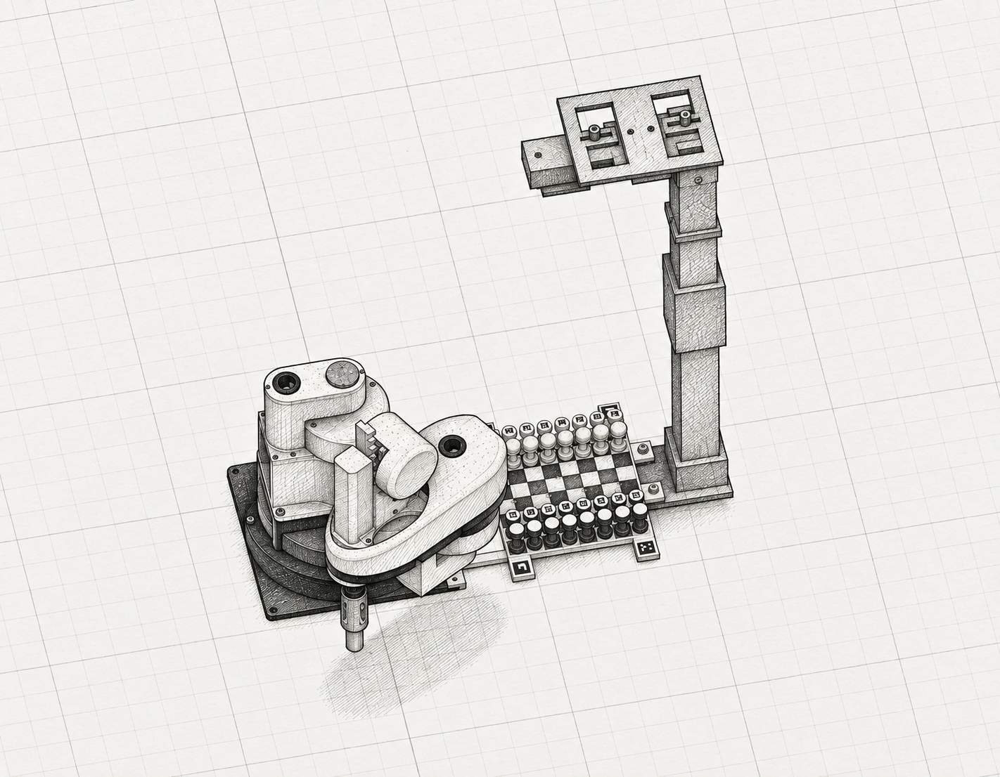

El robot,
pieza por pieza.
Un brazo que une diseño, programación y ajedrez. Gíralo, descubre cómo funciona y aprende a usar lo que construimos.
Empieza a explorar ↘↔ Arrastra para girar · Acerca con dos dedos o la rueda · Toca una pieza
Modelo de referencia: ensamblaje R03 aportado al proyecto. La configuración física y las aplicaciones evolucionaron después; consulta las notas de versión en la biblioteca.
Primero prepara.
Después, juega.
El robot necesita saber dónde está su brazo, dónde están las casillas y a qué altura recoger cada pieza. Son ajustes distintos.
Calibración, cuidado y solución de problemas +
Estas aplicaciones funcionan en la Raspberry del robot. Este manual público sirve para aprender; para controlar el equipo abre la app en la propia Raspberry y sigue la preparación física. Desde otro equipo se necesita el acceso local o túnel que haya configurado el docente.
Un cerebro.
Varios sentidos.
La cámara observa, la Raspberry interpreta la partida y la STM32 coordina el movimiento. Las fuentes externas entregan la energía a los actuadores.

Aprender haciendo.
Y haciendo preguntas.
Adaptamos una plataforma de robótica abierta para convertirla en un compañero de ajedrez. Estudiantes, docente y ChatGPT Codex participaron en un proceso de diseño, programación y pruebas.
Del modelo a tu mesa.
El manual reúne instrucciones, conexiones, láminas y referencias. Guarda los archivos para consultarlos también sin conexión.